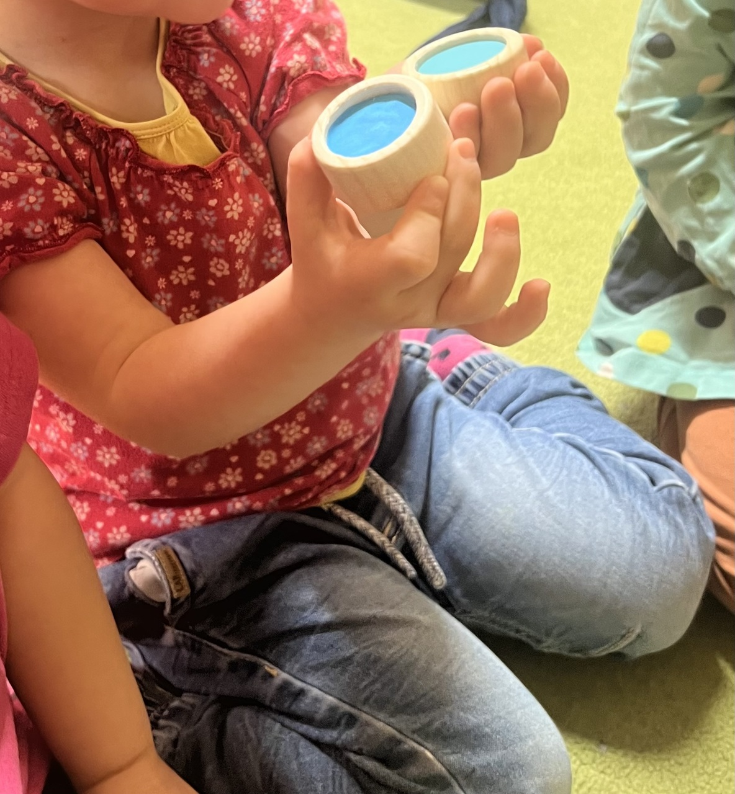
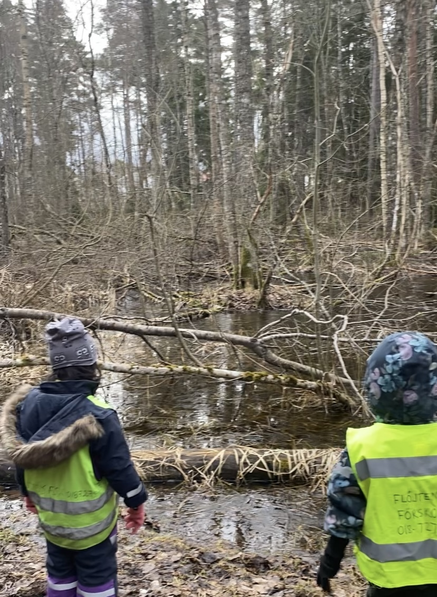

Im Februar haben wir es trotz freier Tage und Krankheitsausfällen geschafft, uns in das Thema einzuarbeiten, mit dem wir arbeiten werden, und eine Reihe weiterer Aktivitäten durchzuführen.
Internationaler Tag der Muttersprachen
Am Freitag, den 21. Februar, haben wir den Internationalen Tag der Muttersprachen mit Vorlesestunden in verschiedenen Sprachen gewürdigt. Der Tag war ein voller Erfolg – nicht zuletzt dank aller Eltern, die eingesprungen sind und in zusätzlichen Sprachen vorgelesen haben, als die von uns Pädagogen gesprochene Sprache.
Thema Farbe
Seit Beginn des Semesters haben wir den Kindern systematisch eine Vielzahl von Materialien angeboten, wie Rollenspielmaterial, kreatives Material und Baumaterial. Ein gemeinsamer Nenner in den verschiedenen Spielen und beim Umgang mit dem Material war, wie die Kinder die unterschiedlichen Farben wahrnehmen.
Wir haben Materialien wie Magnete, kleine Legosteine, Malutensilien, Zeichenmaterial und Perlen angeboten.

Thema Farbe
Seit Beginn des Semesters haben wir den Kindern systematisch eine Vielzahl von Materialien angeboten, wie Rollenspielmaterial, kreatives Material und Baumaterial. Ein gemeinsamer Nenner in den verschiedenen Spielen und beim Umgang mit dem Material war, wie die Kinder die unterschiedlichen Farben wahrnehmen.
Zu Beginn der Arbeit mit Farben haben wir mit der Geschichte über Geister begonnen, die ihre Farbe ändern, wobei wir jede Farbe auf unterschiedliche Weise erkunden. Ein Teil dieser Arbeit besteht darin, die Zeichen für die Farben als Ergänzung zur gesprochenen Sprache zu erlernen.
Unsere Geister ...
Das Rollenspiel hat sich als eine wertvolle Aktivität erwiesen, die die emotionale, soziale und sprachliche Entwicklung der Kinder fördert und ihnen gleichzeitig die Möglichkeit gibt, ihre Kreativität und Fantasie auszudrücken. Um zum Spielen anzuregen, haben wir auch Stoffe in verschiedenen Farben eingebracht, was zu vielfältigen Einsatzmöglichkeiten geführt hat, bei denen der Fantasie freier Lauf gelassen wurde. Dadurch möchten wir auch die Sprachentwicklung der Kinder fördern, da sie im Umgang mit ihren Freunden neue Wörter und Ausdrücke verwenden und üben.
Stoffe in Hülle und Fülle...
Um die Sprachentwicklung weiter zu fördern, haben wir ein Memory-Spiel gespielt, das nicht nur darauf abzielte, Farben zuzuordnen, sondern auch verschiedene Muster und Strukturen in den Blick nahm. Auf diese Weise üben wir auch, die Eigenschaften der Farbflecken zu beschreiben.
Memory-Spiel
Die Arbeit mit dem Thema Farbe ist wirklich eine farbenfrohe Reise! Wir freuen uns darauf, weiterhin die vielen Wege zu erkunden und zu entdecken, wie Farben das Lernen und die Entwicklung der Kinder bereichern können.
Ausflug
Mittwochs hat die Preiselbeergruppe in der Regel ihren Ausflugstag. Da es wichtig ist, die Voraussetzungen für diese Ausflüge zu schaffen, um die natürliche Neugier und Entdeckungsfreude der Kinder zu fördern, beinhalteten die letzten Ausflüge die Erkundung der näheren Umgebung. Durch das Entdecken und Erforschen ihrer Umgebung erhalten die Kinder die Möglichkeit, ihre kognitiven, motorischen und sozialen Fähigkeiten gemeinsam mit ihren Freunden zu entwickeln.
Fragt eure Kinder gerne, was ihnen beim Ausflug in dieser Woche aufgefallen ist.